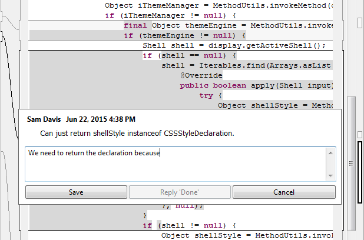
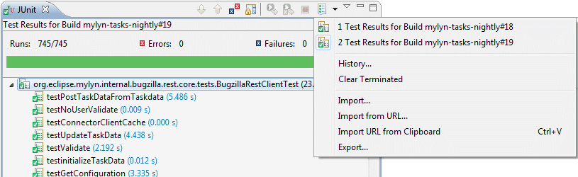

| Release | Resolved | Merged | Community Contributions |
| 3.17 October 2, 2015 |
47 bugs |
124 reviews |
Community contributions were
provided by Max Rydahl Andersen, Jeremie Bresson, Jaxsun McCarthy Huggan, James Kennedy, Chris Poon, and Kenneth Poon.
Includes: Mylyn 3.17, Mylyn Builds 1.9, Mylyn Commons 3.17, Mylyn Context 3.17, Mylyn Docs 2.6, Mylyn Reviews 2.8. Mylyn Tasks 3.17, Mylyn Versions 1.9. |
Also see the New & Noteworthy for: Mylyn 3.16, Mylyn 3.15, Mylyn 3.14, Mylyn 3.13, Mylyn 3.12, Mylyn 3.11, Mylyn 3.10, Mylyn 3.9, Mylyn 3.8, Mylyn 3.6, Mylyn 3.4, Mylyn 3.2, Mylyn 3.0, Mylyn 2.0, Mylyn 1.0-0.6, Mylyn 0.5, Mylyn 0.4, Mylyn 0.3
NOTE: Mylyn 3.17 requires Java 1.7 or later and supports Eclipse 3.8, 4.4 or 4.5. See the download page for repository locations.
|
Inline Comments |
Inline comments can now be edited and replied to inline, without opening a separate dialog.  |
|
|
|
|
Gerrit 2.11.3 |
Gerrit 2.11.3 is now supported. |
|
Identify Build Plan in JUnit and Console Views |
When showing the results of a build executed by Hudson/Jenkins, the JUnit and Console views now display the name of the build plan. This is also shown when selecting previous builds from the view history.  |
|
|
|
|
Hudson 3.3.0 and Jenkins 1.609.2 |
Hudson 3.3.0 and Jenkins 1.609.2 are now supported. |
See porting guide for additional notes on API changes.
|
Label Fields |
The Tasks framework now has an attribute editor for label fields. |
|
|
|
|
Field Dependencies |
A TaskAttribute.META_DEPENDS_ON_ATTRIBUTE_ID metadata key has been added to represent attribute dependencies. See bug 470016. |
|
|
|
|
Connector Branding |
AbstractRepositorySettingsPage now has API to allow a connector brand to be set on the page and to update the title and banner when the brand changes. See bug 472556. |